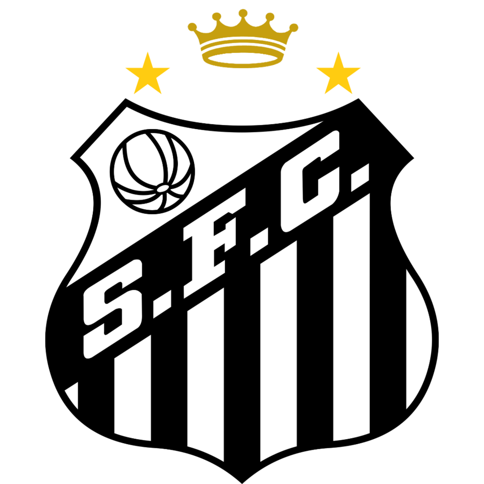
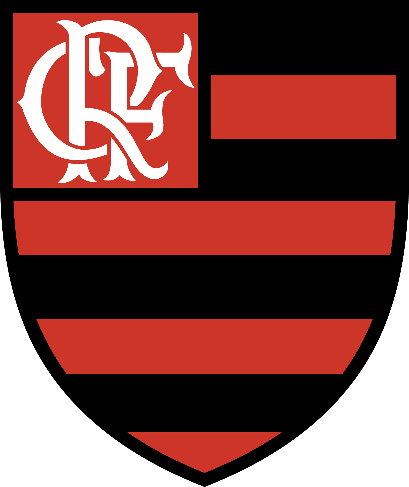
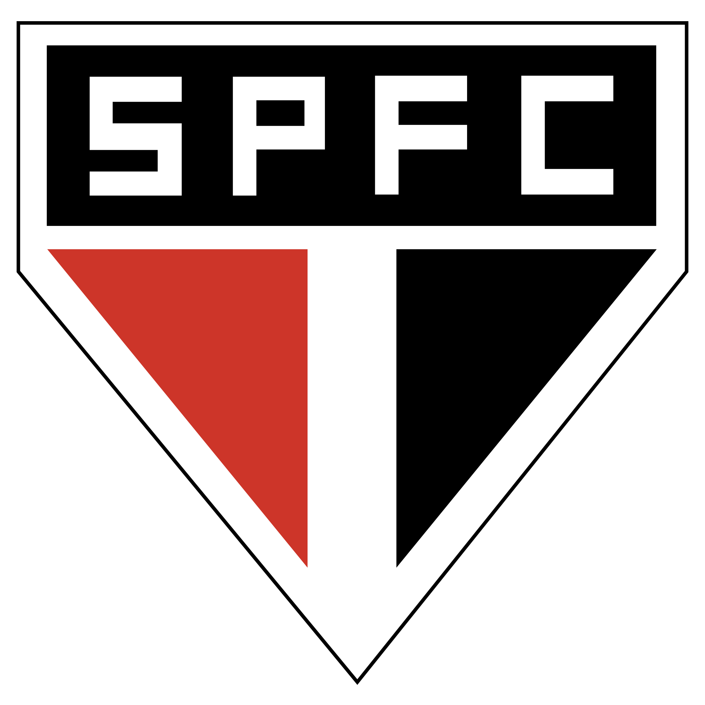
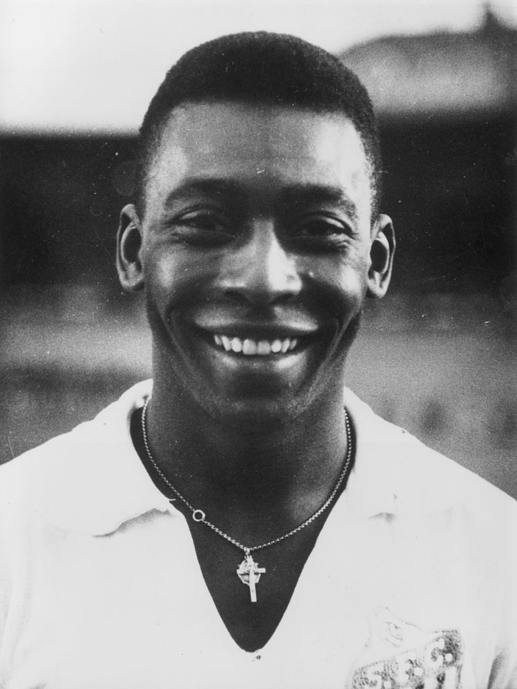
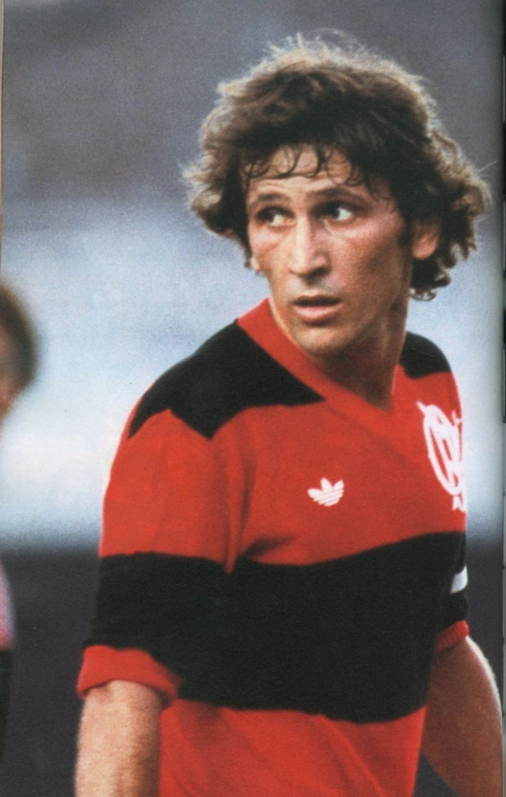
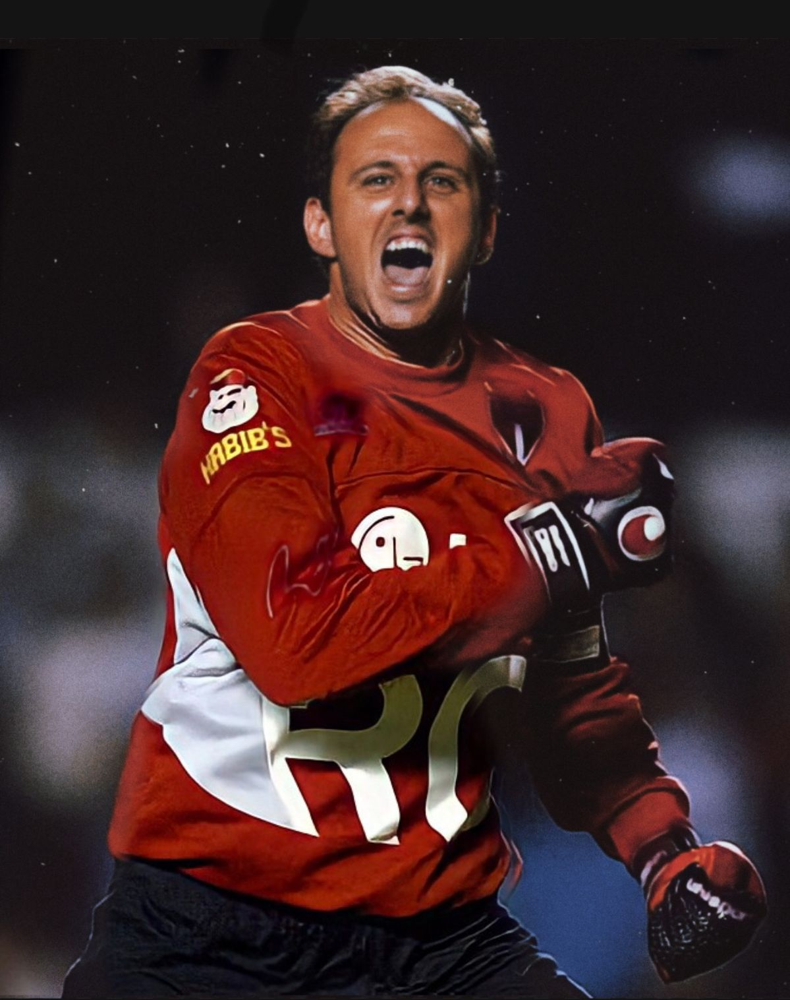

Santos
Fundado em 1912, o Santos Futebol Clube é conhecido por revelar grandes talentos e por seu estilo de jogo ofensivo. É o clube de Pelé, o maior ídolo da história do futebol.
Saiba maisOs três maiores clubes do futebol brasileiros

Santos
Flamengo
São PauloFundado em 1912, o Santos Futebol Clube é conhecido por revelar grandes talentos e por seu estilo de jogo ofensivo. É o clube de Pelé, o maior ídolo da história do futebol.
Saiba maisFundado em 1895, o Clube de Regatas do Flamengo é um dos maiores clubes do mundo. Sua torcida é uma das maiores do planeta e o clube é sinônimo de paixão e conquistas.
Saiba maisFundado em 1930, o São Paulo Futebol Clube é um dos clubes mais vencedores do Brasil. Conhecido por sua tradição, o tricolor paulista é símbolo de raça, história e orgulho.
Saiba maisGrandes clubes e suas grandes conquistas.
Três ídolos, três histórias, o mesmo amor pelo futebol.

Maior ídolo do Santos e um dos maiores jogadores de todos os tempos, considerado por muitos o Rei do Futebol.

Ídolo eterno do Flamengo, considerado um dos maiores meias da história do futebol mundial.

Maior goleiro-artilheiro do mundo e ídolo do Tricolor Paulista.